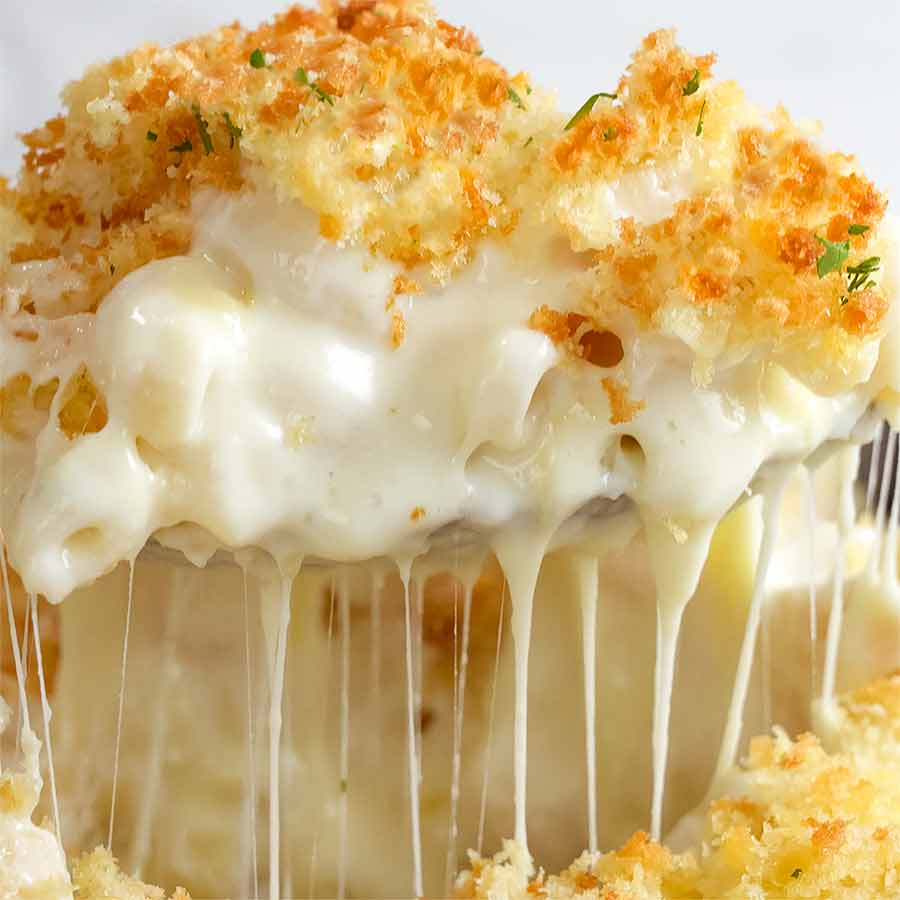

Mac and Cheese

Description
The ultimate Mac and Cheese recipe that is guaranteed to fill in those comfort food cravings.
This homemade dish is rich in flavour, easy to make and is simple enough to get creative with.
Ingredients
- 8 ounces uncooked elbow macaroni
- 2 cups shredded sharp Cheddar cheese
- 1/2 cup grated Parmesan cheese
- 3 cups milk
- 1/4 cup butter
- 2 1/2 tablespoons all-purpose flower
- 2 tablespoons butter
- 1/2 cup bread crumbs
- 1 pinch paprika
Steps
- Cook macaroni according to the package directions. Drain.
-
In a saucepan, melt butter or margarine over medium heat. Stir in enough flour to make a roux.
Add milk to roux slowly, stirring constantly. Stir in cheeses, and cook over low heat until cheese is melted and the sauce is a little thick.
put macaroni in large casserole dish, and pour sauce over macaroni. Stir well.
-
Melt butter or margarine in a skillet over medium heat. Add breadcrumbs and brown.
Spread over the macaroni and cheese to cover. Sprinkle with a little paprika.
- Bake at 350 degrees F(175 degrees C) for 30 minutes. Serve.